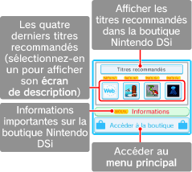
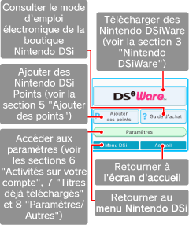

● Ecran d’accueil
Vous y trouverez des titres recommandés et d'autres informations importantes.

● Menu principal
Utilisez les options de cet écran pour acheter des logiciels exclusifs Nintendo DSi (Nintendo DSiWare), ajouter des Nintendo DSi Points ou accéder aux paramètres de la boutique Nintendo DSi.
